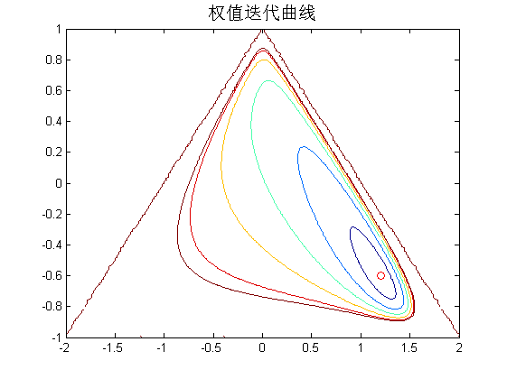
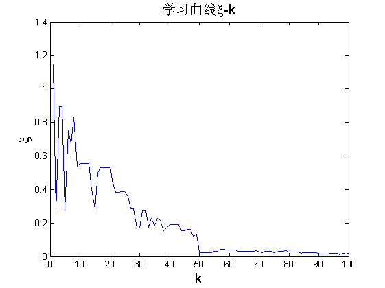
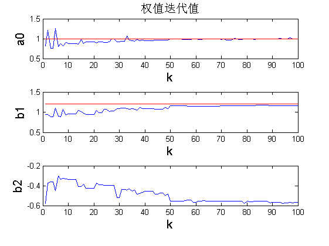

Contents
%%*******************IIR-GA-Main***********************%% % 此为用GA算法实现P113系统辨识的例子 % 参数范围a->(0,2) b1->(-2,2) b2->(-1,1) % select->选择函数 cross->交叉函数 mutation->变异函数 % trans->编码转换函数(不需要) % 秋阳---最后修改2015-11-29
1.画性能表面图形
clear all;close all;clc tic %%%%---------------------画性能表面及最佳权----------------------%%% syms z; H0=1/((1-1.2*z^(-1)+0.6*z^(-2))*(1-1.2*z+0.6*z^2))*(1/z);%%%求phidd(0) phidd0=RESIDUE(H0); %3.5714 [b1,b2]=meshgrid(-2:0.02:2,-1:0.01:1); %%----将性能函数的围线积分部分分成两个部分用留数求围线积分---- rt1=0.5*(b1+sqrt(b1.^2+4*b2));%%rt1、rt2为共轭复根，rt3、rt4为前两根倒数； rt2=0.5*(b1-sqrt(b1.^2+4*b2)); % rt1=rt1.*(abs(rt1)<1)+100*(abs(rt1)>=1); rt2=rt2.*(abs(rt2)<1)+100*(abs(rt2)>=1); % rt3=1./rt1;rt4=1./rt2,但由于未知系统是稳定系统，而其极点即为rt1、rt2， %在单位圆内，所以在稳定条件下rt3、rt4处于单位圆外，不参与留数计算； res1=rt1./((1-rt1.*rt1).*(1-rt1.*rt2).*(rt1-rt2));%%计算rt1处的留数 res2=rt2./((1-rt2.*rt1).*(1-rt2.*rt2).*(rt2-rt1));%%计算rt2处的留数 %PART2---该式为-2*phidx(z)*H(z)/z % H2=-2*z/((1-1.2*z+0.6*z^2).*(z^2-b1*z-b2));具有四个根，分别为rt1,rt2, %1+0.8165i,1-0.8156i,但后两个根在单位圆外，忽略 res3=-2*rt1./((1-1.2*rt1+0.6*rt1.^2).*(rt1-rt2)); res4=-2*rt2./((1-1.2*rt2+0.6*rt2.^2).*(rt2-rt1)); ksi=phidd0+res1+res2+res3+res4; %%%%性能表面函数 v=5*[0.1,0.3,0.5,0.7,0.9,0.99];%%ksi偏大可能原因：认为PHIxx(z)=1； figure(1);contour(b1,b2,ksi,v) axis([-2 2 -1 1]); hold on plot(1.2,-0.6,'ro');%画出最佳权 title('权值迭代曲线','fontsize',15)
2.GA寻求最佳解
popsize=50; %种群规模 pr=0.2; %种群的选择概率0.2 0.2 pc=0.6; %种群的交叉概率0.6 0.4 pm=0.1; %种群的变异概率0.1 0.2 maxgen=100; %种群的最大迭代次数
3.GA寻优（可加入LMS算子）
pop0=rand(popsize,3); %三个待求参数(基因) fit=fitness(pop0); %计算种群的适应度值 wbest=zeros(maxgen,3); %用以保存每次迭代的最优个体（最优权） W=zeros(popsize,3,maxgen); for k=1:maxgen pop1=select(pop0,fit,pr); %pop0经过选择复制后得到pop1 pop2=cross(pop1,pc); %pop1经过交叉后得到pop2 pop3=mutation(pop2,pm); %pop2经过变异后得到pop3 popnew=pop3; %经选择、交叉、变异后得到的新种群popnew %---------遗传算法中加入LMS、SHARF算子------------% % flag='SHARF'; % ps=0.5;K=10;%算子的执行概率及迭代次数 % popnew=myoperator(popnew,flag,ps,K); %--------------LMS算子执行结束-END------------% pop0=popnew; fit=fitness(pop0); %------------找到每次迭代的最优权并保存----------% ind=find(fit==min(fit),1); wbest(k,:)=pop0(ind,:); W(:,:,k)=[2*pop0(:,1),4*pop0(:,2)-2,2*pop0(:,3)-1]; end toc %------------得到最后一次迭代后的种群-------------------% [~,index]=sort(fit); pop=pop0(index,:); a0c=pop(:,1);b1c=pop(:,2);b2c=pop(:,3); a0=a0c*(2-0)+0;b1=b1c*(2+2)-2;b2=b2c*(1+1)-1; %解码后得到a0 b1 b2的真实值 w=[a0,b1,b2]; disp(w(1:5,:)) %显示最后一次迭代后的前5个最优个体 %-----------------得到每次迭代的最优权(解码后)------------------% wb(:,1)=wbest(:,1)*(2-0)+0; wb(:,2)=wbest(:,2)*(2+2)-2; wb(:,3)=wbest(:,3)*(1+1)-1;
时间已过 6.959621 秒。
0.9892 1.1611 -0.5682
0.9978 1.1615 -0.5687
0.9845 1.1613 -0.5660
1.0020 1.1624 -0.5691
0.9946 1.1612 -0.5651
动画演示GA寻优过程
---------画出每次种群的变化分布----------%
fig=figure(1); h0=plot(wb(:,2),wb(:,3),'b*'); xlabel('b1','fontsize',15);ylabel('b2','fontsize',15); % title('GA-LMS寻优') title('GA寻优','fontsize',15) legend('等高线','最佳权','GA种群') % figure(1);k=10; title(['GA-LMS寻优(k=' num2str(k) ')']); % set(h0,'xdata',W(:,2,k)); % set(h0,'ydata',W(:,3,k)); % for k=[1,10:10:maxgen] % set(h0,'xdata',W(:,2,k)); % set(h0,'ydata',W(:,3,k)); % title(['GA-LMS寻优(k=' num2str(k) ')'],'fontsize',15); % pause(1); % % drawnow; % end aviobj = avifile('GA.avi','compression','None'); for k=[(1:9),10:5:maxgen] set(h0,'xdata',W(:,2,k)); set(h0,'ydata',W(:,3,k)); % title(['GA-LMS寻优(k=' num2str(k) ')']); title(['GA寻优(k=' num2str(k) ')'],'fontsize',15); % pause(1); % drawnow; F=getframe(fig);%获取当前画面 aviobj=addframe(aviobj,F);%加入avi对象中 im=frame2im(F);%转成gif图片，只能用256色 [I map]=rgb2ind(im,256); %=-写入GIF89a格式文件%---- if k==1 imwrite(I,map,'GA.gif','GIF', 'Loopcount',inf,'DelayTime',1); else imwrite(I,map,'GA.gif','GIF','WriteMode','append','DelayTime',1); end end close(fig); %关闭avi对象 aciobj=close(aviobj);
警告: 未来的版本中将会删除 AVIFILE。请改用 VIDEOWRITER。
4.学习曲线、权值迭代曲线
ksi=myfunksi(wb); figure(2) plot(ksi) xlabel('k','fontsize',15);ylabel('{\xi}','fontsize',15);title('学习曲线{\xi}-k','fontsize',15) %---权值单一迭代曲线---% figure(3) subplot(311);plot(wb(:,1));xlabel('k','fontsize',15);ylabel('a0','fontsize',15); title('权值迭代值','fontsize',15);hold on;plot(ones(1,maxgen),'r') subplot(312);plot(wb(:,2));xlabel('k','fontsize',15);ylabel('b1','fontsize',15); hold on;plot(1.2*ones(1,maxgen),'r') subplot(313);plot(wb(:,3));xlabel('k','fontsize',15);ylabel('b2','fontsize',15); hold on;plot(-0.6*ones(1,maxgen),'r') % figure(3) % k=1:maxgen; % plot(k,wb(:,1),'r',k,1*ones(1,maxgen),'k',k,wb(:,2),'r',k,1.2*ones(1,maxgen),'k',... % k,wb(:,3),'r',k,-0.6*ones(1,maxgen),'k') % set(gca,'ytick',[-0.6 0,1,1.2]) % xlabel('k','fontsize',15);ylabel('w','fontsize',15);title('权值迭代曲线','fontsize',15) % legend('权迭代过程w(a0,b1,b2)','最佳权值wbest(a0,b1,b2)','location','best') 